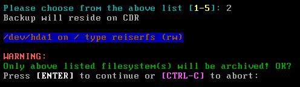
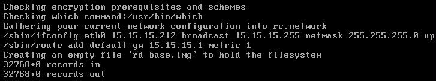
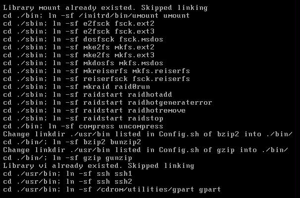
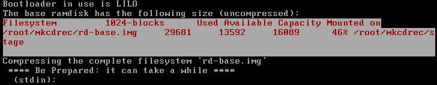

After the “make test” was successful you can run mkCDrec in two different modes, interactive and in batch.
To run in interactive mode just type “make” and the following screen will be displayed:
To run in batch mode, then you have to add an option to the make command. The batch mode commands are listed in the same order as the interactive mode:
Make rescue
Make CD-ROM
Make path DESTINATION_PATH=/foo
Make device
Another important option to make is “clean”:
# make clean
will remove all temporary files made by mkCDrec including the ISO9960 images created.
If you select option 1 from the menu then you will create a small ISO9960 image without backups, but still useful as a simple rescue CD-ROM built on your Linux platform. You can even burn the image to a business card size CD-ROM. Of course, you cannot restore backups with this CD-ROM unless you have your complete system file systems on another backups media, such as Tivoli Storage Manager or Data Protector.
Option 2 will create a rescue CD-ROM including a complete backup of your system’s file systems. Of course it will exclude any files or file systems you set in Config.sh EXCLUDE_LIST.
If necessary mkCDrec will create multi-volume CD-ROM images or can even burn a DVD too.
Option 3 expects that you NFS mounted the ISOFS_DIR (see Config.sh file)! Still a rescue CD-ROM will be made but the destination path on the CD-ROM will point to the NFS mount point and it will try to auto-mount it. If that does not work, then try it manually before starting a restore, clone operation.
Option 4 will prompt for a no-rewinding tape device, either local or remote accessible, e.g. /dev/nst0.
Also now a mkCDrec ISO image will be created that must be used for a recovery operation.
So, to restore a system you first need to boot from the CD-ROM and then insert the tape into the tape drive (local or remote) and start the restore to retrieve the data from tape.
Note that there is the possibility to create an OBDR tape (no CD-ROM image will be burned).
If in the Config.sh file you activated encryption cipher, e.g. openssl Blowfish cipher
CIPHER=bf
Then you will be prompted twice for a password:
When in the Config.sh file CIPHER=”” (default value) then the backups will not be encrypted.
In interactive mode you will see the following question appearing:

If there are file systems listed that should not be backup’ed then press Control-C now and unmount those file systems immediately. In batch mode the above screen will not be disabled!
Thereafter, just run “make” command again to restart the backup process.
What follows is a series of screen dumps of such a run to give you an impression of how it looks.

It will start with some primary checking, including if encryption will be used or not. The network settings are stored in a system file. Later when you boot from the mkCDrec CD-ROM it will allocate the IP address as found while making the disaster recovery image, unless you have chosen DHCP setting in the Config.sh configuration file, or if you are using DHCP right now.
Then it will create the root file system for the RAM disk. In above picture the RAM disk is created as an ext2 file system. It is also possible to use another file system as ext3, minix, reiserfs, xfs or jfs, but you loose so much RAM disk space on journaling it is unwise to use journaling file systems such as ext3, reiserfs, xfs and jfs. Ext2 is good enough for a RAM disk anyway as it lives in memory only and not an a real hard disk.
The root file system is mounting and filled with directories and binaries (stripped binaries) as seen in following screen shots.
Somewhere after copying the binaries and libraries mkCDrec will create lots of scripts and rescue files in the root file system etc/recovery directory.

After a while the root file system is complete and will get unmounted and compressed.

After the RAM root file system is compressed, and only when the mkCDrec Utilities were installed you will see the following cfg2html run. This creates 2 important files (one as plain text and one in HTML format) that contain a complete overview of your current system’s hardware and software installed, including all the configuration settings. For this alone it is worth installing the mkCDrec Utilities. The information that these files contain will be very appreciated in case of trouble! Believe me.
The next important phase in mkCDrec disaster recovery image making is the creation of the initial RAM disk which is a small boot image that loads some loadable modules in memory to mount the CD-ROM and bootstrap into the bigger root file system RAM disk.
As you can see not much binaries are needed in the initial RAM disk.
After the initial RAM disk mkCDrec will create a bootable floppy in memory, but it is possible to write to a real floppy too if the size permits. See the Config.sh file to toggle this.
The boot floppy contains the Linux kernel and the initial RAM disk. Once the boot floppy is done syslinux will make it bootable.
If you have installed mkCDrec Utilities you will notice that the behavior is somewhat different as it will use isolinux directly to boot from the CD-ROM instead of emulating a boot floppy booting from a CD-ROM.
After the boot floppy it is time to create the backups of the mounted file systems using GNU tar.
The behavior can be different as seen below if you have selected backup to tape or another disk.
The cutstream program is nothing more then a calculator to split the backups into 650 Mbytes images so mkCDrec can create an ISO9660 image of it. The image size is a variable that is defined in the Config.sh file (MAXCDSIZE).
mkCDrec uses mkisofs to create a bootable El-Torito CD-ROM.
Once the CDrec.iso has been created by mkisofs it will be checked to see whether it is useable and an md5sum checksum will be implanted in the image too.
If you have selected to use a CDRW (variable in Config.sh) it will blank the CD, otherwise it will skip this step.
Burning the CDrec.iso image to the CDR(W) is done with cdrecord.
Above error will normally not been seen as in this case vmware was used to capture the screen shots, but it gives you an impression that you will be given a second chance to write the image to CDR(W) if the first one fails. If it still fails it will move the CDrec.iso image to another filename and continue with the backups.
After the entire file systems are backup’ed the last CDrec.iso image will be written.